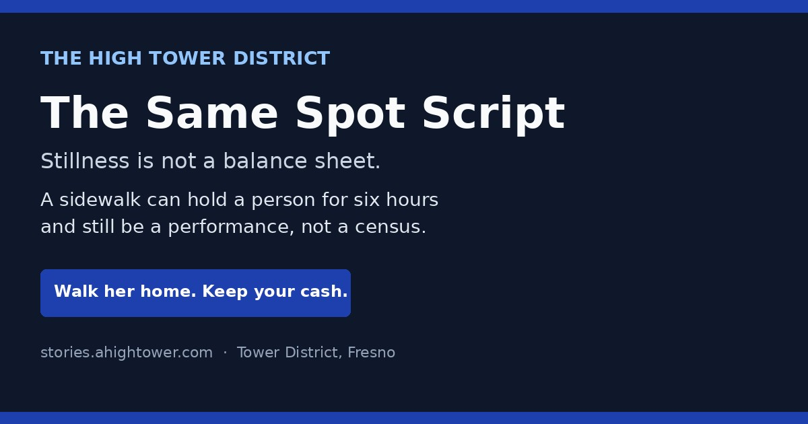
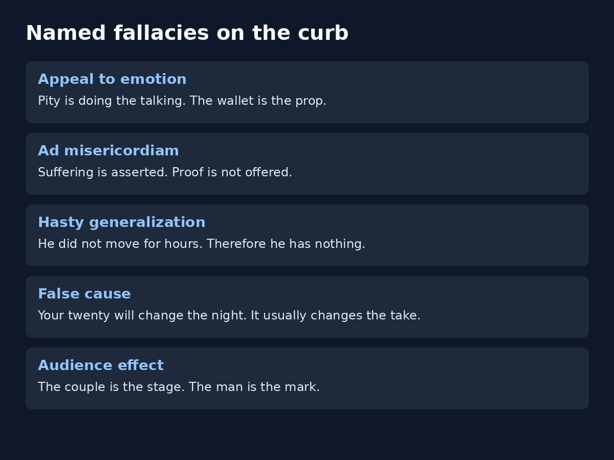
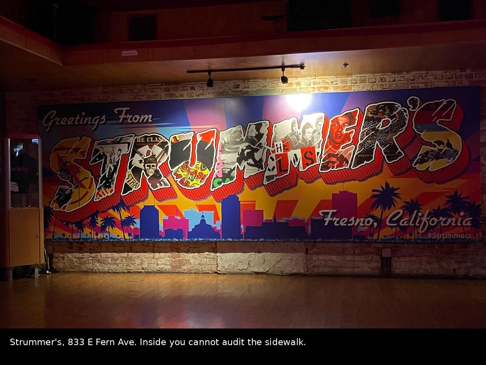
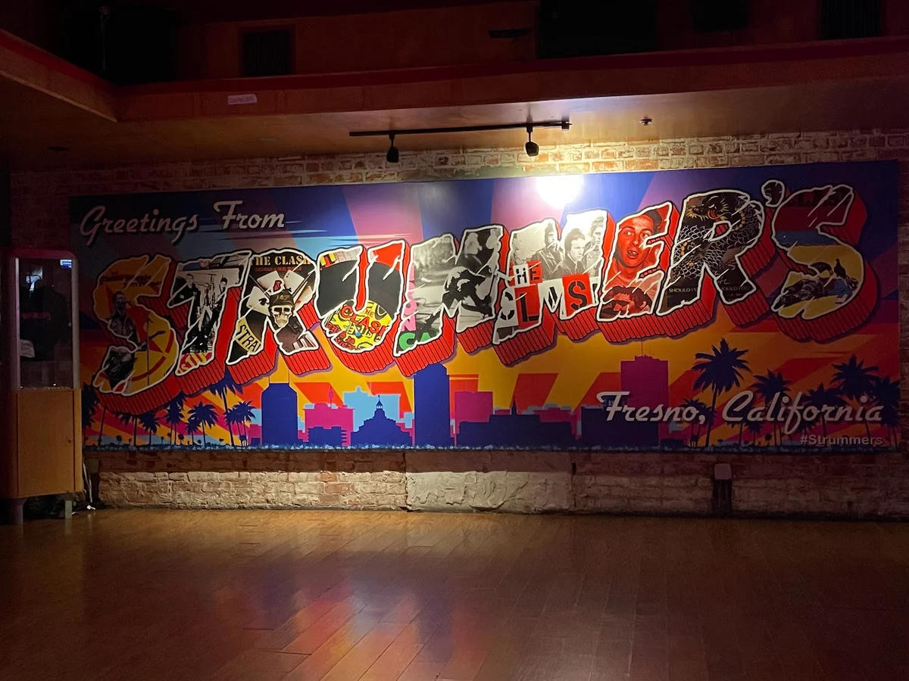
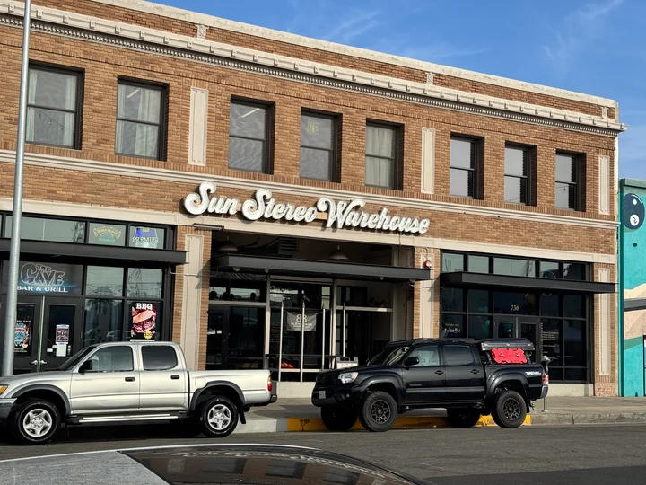
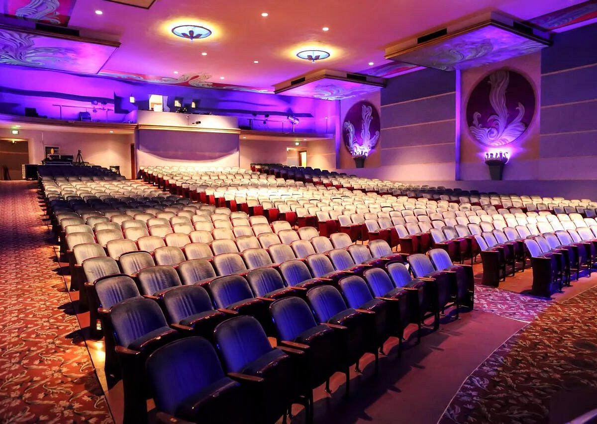
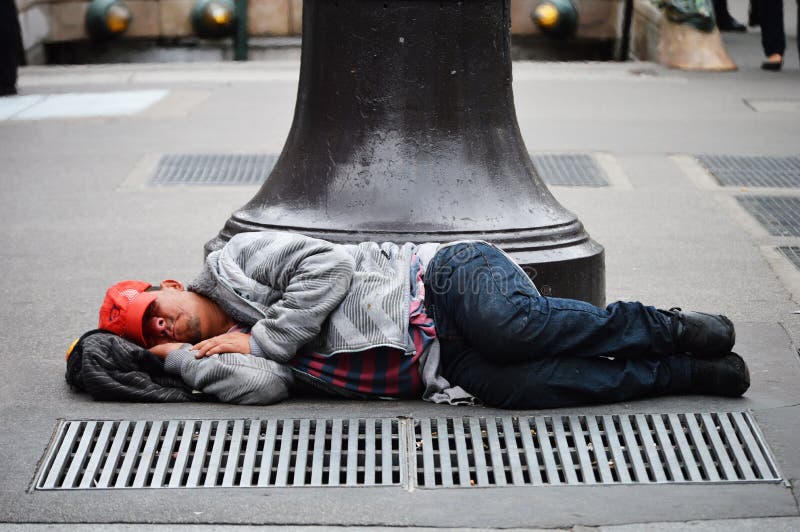
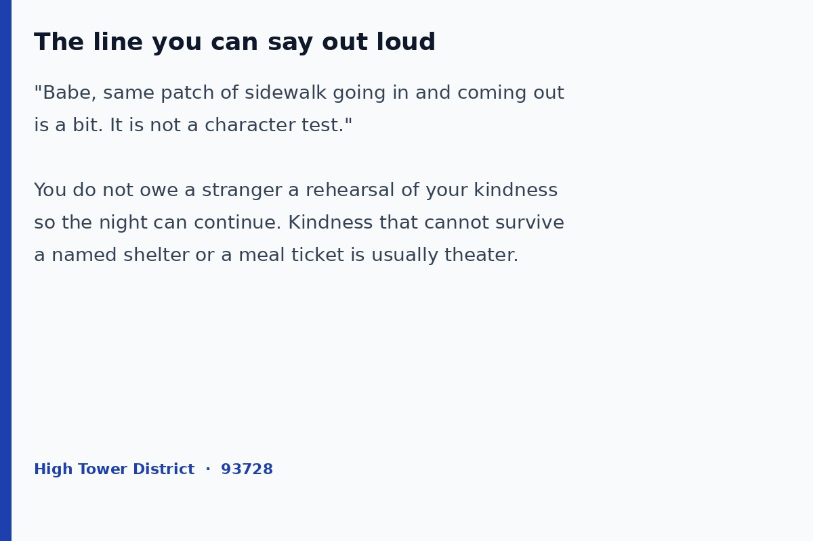

What was overheard
In 2016 a Lyft driver sat parked late at night near Windward and Pacific, window cracked, and heard a man who looked destitute explain his own method to someone else. The claim was long tenure. The instruction was timing. Be on the sidewalk as people walk into the bar. Be on the exact same patch as they walk out. Look as if you never left. Hit the couple after a drink or two, when the man may want to look large in front of the woman he hopes to take home.
That is not a statute. That is a pitch. It was reported as something overheard, not as a recipe invented for this page. The rest of this story exists so a woman on Olive or Fern can tap a forearm and end the scene without a speech.
The legal line in California is not “sitting while poor.” Penal Code 647(c) targets accosting people in public to beg. Passive presence, no chase, no block, no follow, is the side of the line a careful operator tries to stay on. Cities can stack their own aggressive-solicitation rules on top. None of that tells you whether the person on the concrete is broke, bored, or working a shift.
Why the couple is the mark
This part is not folklore. Police problem-solving literature has said it in print for years. The Center for Problem-Oriented Policing guide on panhandling notes that male-female couples are attractive targets because the man is likely to want to appear compassionate in front of the woman.
A New England Journal of Public Policy interview with a veteran street solicitor named Mark is even plainer. Couples out for a big night are “almost always sure marks.” The man is already spending to impress. He does not want her put off if he walks past. Guilt does the rest.
The Urban Institute’s brief on preventing panhandling lists the same targeting pattern: people seen as sympathetic or generous, including male-female couples. None of those papers is about Fresno. All of them describe the same social physics that a 2016 sidewalk lecture described out loud.
So the “scam,” if you want the hard word, is not always a fake cast or a fake war story. Sometimes it is a real body placed in a real choke point at the hour when pride is cheap and cash is out. Stillness is the costume. The audience is you two.

The fallacies, said plainly
- Appeal to emotion. The sleeping bag does the talking. Your date is the jury.
- Argumentum ad misericordiam. Mercy is demanded before facts are offered. Mercy can still go to a kitchen that publishes hours.
- Hasty generalization. He did not stand up for six hours. Therefore he owns nothing. Stillness is a skill some people practice on purpose.
- False cause. Your twenty will change his night. It more often changes the night’s take.
- Audience effect. Alone, many men walk. With you, some men perform. That is the product being sold.
A person can be truly poor and still use the couple as a stage. A person can have money and still lie still until last call. You cannot audit that from the doorway. You can refuse to be the proof of character in someone else’s set.
Why a dark room matters
Strummer’s at 833 E. Fern Avenue is a concert hall and bar named for Joe Strummer. Hours run late. The room is built for sound, not for watching the curb. If the sidewalk is the stage, the people inside are a bad camera. They cannot see whether the body on the concrete stood up, talked to a friend, walked a block, and returned to the same mark before last call.
Sequoia Brewing at 777 E. Olive Avenue sits on the Tower Theatre block. More glass, more patio, more chance that someone inside actually sees the sidewalk. That is why a dark venue is a better set for the “I never moved” story. The story does not need Sequoia to be the scene. It needs you to notice which doors cannot see the street.





Even six hours is not a ledger
Grant the strongest version. He arrived before sundown. He did not speak. He did not stand when smokers came out. He was on the same paint line when the last group left. That is endurance. It is not a bank statement. People hold still for money, for sport, for a dare, for a habit, and for need. You are not required to settle which one it is at 1:40 a.m. with a date on your arm.
If the night is about getting her home safe and keeping the rest of the night yours, the sidewalk is not the exam. The exam was whether you treated her well inside. A stranger with a bag does not grade that.

The line, for her
You do not need a lecture. You need a sentence he can obey without looking cheap.
Babe, same patch of sidewalk going in and coming out is a bit. Walk. We can feed a kitchen tomorrow.
If he wants to give, aim the gift where books are kept. Poverello House. A parish pantry with a posted hour. A city program that will still be there on Tuesday. Cash on the curb after last call is a tip for a performance you did not ask to attend.
You are not hard for saying that. You are declining to let a third person cast your night. Safe transit home is already the job. Intimacy later does not require a cover charge paid to a stranger who timed the door.
What this page is not
It is not a how-to. The 2016 speech already did that work in the dark. It is not a claim that every person on Fern or Olive is acting. Real hunger exists in 93728. Real addiction exists. Real mental illness exists. Those facts do not convert a couple into an ATM.
It is also not a photo lineup. The stills here are venue rooms, district fabric, and an illustrative body on pavement. No named human is accused of working a named door tonight. The method is older than the photo.
Sources
- California Penal Code 647(c), accosting in public for begging or soliciting alms. Separate 647c covers willful malicious obstruction of sidewalk movement.
- Center for Problem-Oriented Policing, The Problem of Panhandling. Male-female couples as preferred targets because the man wants to appear compassionate.
- Urban Institute, Preventing Panhandling. Targeting of people seen as generous, including male-female couples. High-traffic sidewalks and doors.
- New England Journal of Public Policy / related street interviews. Veteran solicitor “Mark”: couples out for a big night as sure marks; the man does not want her put off.
- Spot literature in urban ethnography: “same face, same place” as a way regulars become readable and hard to refuse.
- Strummer’s, 833 E. Fern Ave, Fresno 93728. Public venue listing and hours. Concert room with limited sidewalk sightlines.
- Sequoia Brewing, 777 E. Olive Ave, Fresno 93728, Tower Theatre block. Public address and civic reporting on the building.
- Neighborhood testimony, 2016: Lyft driver parked near Windward and Pacific overheard a sidewalk lecture on entry-and-exit placement. Treated here as a reported account, not as a manual.
Close
The High Tower District can feed people without auditioning men on the way to the car. If she says it is a bit, it is a bit. Walk her home.